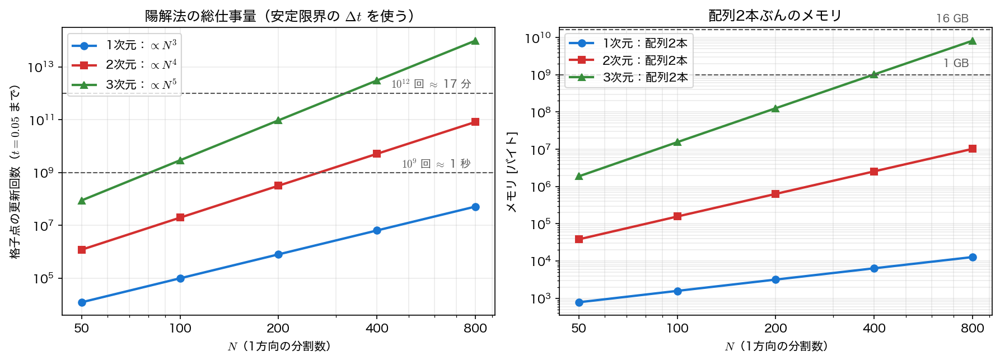

多次元計算の実装
1次元の計算では、実装の細部が結果を左右することはあまりない。配列は数千要素で、全部がキャッシュに載る。多次元ではそうはいかない。同じ演算を同じ回数だけやっているのに、ループの順序を入れ替えただけで4倍遅くなる——本ページで実際にそれを測る。
前提として、「その計算がそもそも手持ちの計算機で終わるのか」を事前に見積もる習慣も必要である。走らせてから3日後に気づくのでは遅い。
2次元配列をどう確保するか
C で2次元配列を扱う方法はいくつかあるが、本講義では次の形を使う。
u は「長さ \(N+1\) の double 配列」へのポインタで、u[i][j] と自然に書ける。要素は \((N+1)^2\) 個ぶんが1つの連続した領域に確保される。この形を選ぶ理由は3つある。
double u[N+1][N+1];はスタックに載らない。 \(N=1000\) なら約 8 MB で、多くの環境の既定のスタックサイズ（8 MB 程度）を超えて実行時に落ちる。ヒープから取る必要がある。double **uにして行ごとにmallocする方法は、メモリが連続しない。 行ごとにばらばらの位置に置かれるので、キャッシュの利きが読めなくなる。ポインタ配列を1段余計にたどるぶんも遅い。callocは \(0\) で初期化してくれる。 境界の値が \(0\) の問題では、内部だけ書き込めば境界は自動的に \(0\) になる。
添字の範囲を \(0\dots N\)（境界を含む）に取っているのも意図的である。内部の更新ループは for (i = 1; i < N; i++) と書けば、\(u_{i-1,j}\) や \(u_{i+1,j}\) が常に配列の中に収まり、境界かどうかを判定する if がループの中から消える。分岐は最内側ループの敵である。
row-major：どちらの添字が連続か
C の多次元配列は row-major（行優先）、すなわち最後の添字がいちばん速く動く順に並ぶ。double u[5][5] の各要素の、先頭からのバイト位置を実際に印刷すると次のようになる（実行結果の (1)）。
\(j\) を1つ増やすと \(8\) バイト（double 1個ぶん）、\(i\) を1つ増やすと \(40\) バイト（1行ぶん）進む。つまり
である。\(j\) 方向が連続、\(i\) 方向は飛び飛び——この事実がそのまま性能に直結する。
なお、Fortran や MATLAB は逆の column-major（列優先）で、最初の添字が速く動く。他言語のコードを移植するときにループ順序をそのまま持ってくると、以下に見るとおり数倍の性能を失う。
ループ順序とキャッシュ
\(N=1000\) の2次元 FTCS を 30 ステップ回し、二重ループの順序だけを入れ替えて時間を測る。
/* (A) i 外・j 内：最内側で j が動く＝連続アクセス */
for (int i = 1; i < N; i++)
for (int j = 1; j < N; j++)
un[i][j] = ...;
/* (B) j 外・i 内：最内側で i が動く＝8008 バイトずつ飛ぶ */
for (int j = 1; j < N; j++)
for (int i = 1; i < N; i++)
un[i][j] = ...;
演算の回数も、実行される演算そのものも、結果も完全に同じである。違うのはメモリを触る順序だけである。測定結果は次のとおり（実行結果の (2)）。
| 順序 | 実行時間 | 相対 | チェックサム |
|---|---|---|---|
| (A) \(i\) 外・\(j\) 内（連続） | 0.013 秒 | \(1.00\) | \(4.494612560362\times10^{5}\) |
| (B) \(j\) 外・\(i\) 内（飛び） | 0.055 秒 | \(4.15\) | \(4.494612560362\times10^{5}\) |
4倍の差である。チェックサムが最後の桁まで一致していることが、演算内容が同一である証拠になっている。
理由はキャッシュにある。CPU はメモリから1バイトずつ読むのではなく、キャッシュラインという 64 バイト（double 8個ぶん）の単位でまとめて読み込む。(A) では u[i][j] を読んだときに u[i][j+1]〜u[i][j+7] も一緒に載るので、続く7回のアクセスはメモリを触らずに済む。(B) では u[i][j] の次に読むのが u[i+1][j]——\(8008\) バイト先で、同じキャッシュラインには絶対に入らない。1回のアクセスごとに 64 バイト読んで 8 バイトしか使わないことになる。
多次元ループの鉄則
最内側のループは、メモリ上で連続に動く添字にする。 C の u[i][j] なら \(j\)、3次元の u[i][j][k] なら \(k\) である。これはコンパイラの最適化オプションでは救えないことが多い（依存関係の解析がループ交換の妥当性を示せない場合がある）ので、書く側が意識するしかない。
なお実行時間は計算機・コンパイラ・最適化オプションに強く依存する。手元で再現するときは秒数の絶対値ではなく、2つの順序の比を見ること。
配列の入れ替えはポインタで
陽解法では、新しい値を別の配列 un に作ってから u に移す。第9回・前ページのサンプルコードでは分かりやすさを優先して要素ごとにコピーしていたが、\(N^2\) 回の代入は無視できない手間である。ポインタを交換すればコピーは要らない。
for (int n = 0; n < nt; n++) {
step(N, r, u, un, order);
double (*tmp)[N+1] = u; u = un; un = tmp; /* 配列の入れ替え */
}
これで1ステップあたりの仕事は「\(N^2\) 回の更新」だけになる。\(N=1000\)、30 ステップなら \(3\times10^7\) 回の無駄な代入が消える計算である。
一方で注意点もある。同じ配列に書き戻してはいけない。
/* 誤り: u[i-1][j] はすでに新しい値に書き換わっている */
for (int i = 1; i < N; i++)
for (int j = 1; j < N; j++)
u[i][j] = u[i][j] + r*(u[i-1][j] + u[i+1][j] + u[i][j-1] + u[i][j+1] - 4.0*u[i][j]);
これは陽解法（ヤコビ法的な更新）ではなく第10回のガウス＝ザイデル法に近い別のスキームになってしまう。定常解を求める反復法ならそれでも収束するが、時間発展を追う計算では時刻の意味が壊れる。配列2本を用意して入れ替える、というのは記憶の節約より正しさの問題である。
規模を先に見積もる
前ページで見た「未知数 \(N^d\)、ステップ数 \(\propto N^2\)、総仕事量 \(\propto N^{d+2}\)」を、具体的な数字に落としておく。\(\alpha=1\)、\(t=0.05\) まで陽解法（安定限界の \(\Delta t\)）で解く場合である。
| 次元 | \(N\) | 未知数 | 配列2本 | ステップ数 | 総更新回数 | \(10^9\) 回/秒なら |
|---|---|---|---|---|---|---|
| 2D | 100 | \(9.8\times10^{3}\) | \(1.6\times10^{5}\) B | 2000 | \(2.0\times10^{7}\) | 0.0 秒 |
| 2D | 400 | \(1.6\times10^{5}\) | \(2.6\times10^{6}\) B | 32000 | \(5.1\times10^{9}\) | 5.1 秒 |
| 3D | 100 | \(9.7\times10^{5}\) | \(1.6\times10^{7}\) B | 3000 | \(2.9\times10^{9}\) | 2.9 秒 |
| 3D | 200 | \(7.9\times10^{6}\) | \(1.3\times10^{8}\) B | 12000 | \(9.5\times10^{10}\) | 94.6 秒 |
| 3D | 400 | \(6.3\times10^{7}\) | \(1.0\times10^{9}\) B | 48000 | \(3.1\times10^{12}\) | 3049 秒 |

この表の読み方は2つある。
- 3次元は \(N=400\) でも「一晩」の計算になる。 \(3\times10^{12}\) 回の更新は、1コアで \(10^9\) 回/秒なら 51 分、実際にはメモリ帯域が律速するのでその数倍かかる。\(N=400\) は3次元では決して細かい格子ではない。ここから、第14回の並列計算が「あれば便利」ではなく必須の道具になる理由が見える。
- メモリは計算時間より先に尽きる。 3次元 \(N=400\) で配列2本が 1 GB、\(N=800\) なら 8 GB。実際の計算では速度場や物性値など配列がもっと必要になるので、\(N=800\) の3次元計算は普通のノート PC では動かない。計算を始める前に、まず掛け算をすること。
前ページの ADI が効いてくるのもここである。ADI ならステップ数を \(N^2\) に比例させずに済むので、3次元 \(N=400\) の \(48000\) ステップを \(100\) ステップ程度に落とせる可能性がある。1ステップあたりの手間が4倍になっても、圧倒的に得である。
3次元の ADI
3次元でも同じ発想が使えるが、素朴な3方向の分解 \(\left(I-\mu\delta_x^2\right)\left(I-\mu\delta_y^2\right)\left(I-\mu\delta_z^2\right)\) は時間1次精度に落ちてしまう（余分な項が \(O(\Delta t^2)\)／ステップになる）。2次精度を保つには Douglas–Gunn 法などの修正が必要になる。本講義では2次元にとどめる。
サンプルコード
メモリ配置・ループ順序・規模の見積もりを1本にまとめる。
#include <stdio.h>
#include <stdlib.h>
#include <time.h>
#include <math.h>
/* 第12回 多次元計算の実装: メモリ配置・ループ順序・計算量の見積もり
C の2次元配列は row-major（行優先）なので、u[i][j] と u[i][j+1] が
メモリ上で隣り合う。最内側ループを j にすれば連続アクセス、i にすれば
(N+1)*8 バイト飛びのアクセスになる。演算の回数はまったく同じでも、
キャッシュに載るかどうかで実行時間は数倍変わる。
実行時間は計算機と処理系に依存するので、絶対値ではなく比を見ること。 */
/* FTCS を1ステップ。order = 0: i 外・j 内（連続）, 1: j 外・i 内（飛び飛び）*/
static void step(int N, double r, double (*u)[N+1], double (*un)[N+1], int order)
{
if (order == 0) {
for (int i = 1; i < N; i++)
for (int j = 1; j < N; j++)
un[i][j] = u[i][j] + r*(u[i-1][j] + u[i+1][j]
+ u[i][j-1] + u[i][j+1] - 4.0*u[i][j]);
} else {
for (int j = 1; j < N; j++)
for (int i = 1; i < N; i++)
un[i][j] = u[i][j] + r*(u[i-1][j] + u[i+1][j]
+ u[i][j-1] + u[i][j+1] - 4.0*u[i][j]);
}
}
/* 総和は常に同じ順序でとる（2つの順序が同じ結果を出すことの確認用） */
static double checksum(int N, double (*u)[N+1])
{
double s = 0.0;
for (int i = 0; i <= N; i++)
for (int j = 0; j <= N; j++) s += u[i][j];
return s;
}
static double timeit(int N, int nt, int order, double *sum)
{
double (*u)[N+1] = calloc((size_t)(N+1)*(N+1), sizeof(double));
double (*un)[N+1] = calloc((size_t)(N+1)*(N+1), sizeof(double));
for (int i = 1; i < N; i++)
for (int j = 1; j < N; j++) u[i][j] = (double)((i*7 + j*13) % 11)/11.0;
clock_t t0 = clock();
for (int n = 0; n < nt; n++) {
step(N, 0.2, u, un, order);
double (*tmp)[N+1] = u; u = un; un = tmp; /* 配列の入れ替え */
}
double sec = (double)(clock() - t0)/CLOCKS_PER_SEC;
*sum = checksum(N, u);
free(u); free(un);
return sec;
}
int main(void)
{
printf("=== 多次元計算の実装 ===\n\n");
printf("--- (1) row-major: double u[5][5] の先頭からのバイト offset ---\n");
static double small[5][5];
printf(" j=0 j=1 j=2 j=3 j=4\n");
for (int i = 0; i < 5; i++) {
printf(" i=%d ", i);
for (int j = 0; j < 5; j++)
printf("%6td", (char *)&small[i][j] - (char *)&small[0][0]);
printf("\n");
}
printf(" j を1つ増やすと 8 バイト（要素1個）、i を1つ増やすと 40 バイト進む。\n");
printf(" つまり j 方向が連続で、i 方向は行の長さだけ飛ぶ。\n");
printf("\n--- (2) ループ順序と実行時間（N = 1000 の FTCS を 30 ステップ）---\n");
double s0, s1;
double t0 = timeit(1000, 30, 0, &s0);
double t1 = timeit(1000, 30, 1, &s1);
printf(" 順序 実行時間 相対 チェックサム\n");
printf(" i 外・j 内（連続） %6.3f 秒 %5.2f %.12e\n", t0, 1.0, s0);
printf(" j 外・i 内（飛び） %6.3f 秒 %5.2f %.12e\n", t1, t1/t0, s1);
printf(" 演算回数は同じで結果も完全に一致するが、実行時間だけが違う。\n");
printf(" ※ 時間は計算機に依存する。比が 1 より十分大きいことだけを確認すること。\n");
printf("\n--- (3) 陽解法で t = 0.05 まで解くときの規模（alpha = 1, 安定限界 dt）---\n");
printf(" 次元 N 未知数 配列2本 dt 限界 ステップ数 総更新回数 1e9回/秒なら\n");
int nl[] = {100, 200, 400};
for (int d = 2; d <= 3; d++)
for (int k = 0; k < 3; k++) {
int N = nl[k];
double dx = 1.0/N, dtmax = dx*dx/(2.0*d);
double n = 1.0;
for (int i = 0; i < d; i++) n *= N - 1;
double steps = ceil(0.05/dtmax), work = n*steps;
double mem = 2.0*n*8.0;
printf(" %dD %5d %9.2e %8.2e バイト %.2e %8.0f %9.2e %9.1f 秒\n",
d, N, n, mem, dtmax, steps, work, work/1e9);
}
printf(" 未知数は N^d、ステップ数は 2d N^2 に比例するので、総仕事量は N^(d+2)。\n");
printf(" 格子を2倍細かくすると 2D で 16 倍、3D で 32 倍の計算量になる。\n");
/* 作図用: 同じ式を 1〜3 次元、N = 50〜800 まで並べる（掛け算だけで計算は無し）*/
FILE *fp = fopen("dimension_cost.dat", "w");
if (fp == NULL) { perror("dimension_cost.dat"); return 1; }
fprintf(fp, "# d N unknowns steps updates bytes\n");
int np[] = {50, 100, 200, 400, 800};
for (int d = 1; d <= 3; d++)
for (int k = 0; k < 5; k++) {
int N = np[k];
double dx = 1.0/N, dtmax = dx*dx/(2.0*d), n = 1.0;
for (int i = 0; i < d; i++) n *= N - 1;
double steps = ceil(0.05/dtmax);
fprintf(fp, "%d %d %.10e %.0f %.10e %.10e\n",
d, N, n, steps, n*steps, 2.0*n*8.0);
}
fclose(fp);
return 0;
}
コンパイル・実行:
実行結果
=== 多次元計算の実装 ===
--- (1) row-major: double u[5][5] の先頭からのバイト offset ---
j=0 j=1 j=2 j=3 j=4
i=0 0 8 16 24 32
i=1 40 48 56 64 72
i=2 80 88 96 104 112
i=3 120 128 136 144 152
i=4 160 168 176 184 192
j を1つ増やすと 8 バイト（要素1個）、i を1つ増やすと 40 バイト進む。
つまり j 方向が連続で、i 方向は行の長さだけ飛ぶ。
--- (2) ループ順序と実行時間（N = 1000 の FTCS を 30 ステップ）---
順序 実行時間 相対 チェックサム
i 外・j 内（連続） 0.013 秒 1.00 4.494612560362e+05
j 外・i 内（飛び） 0.055 秒 4.15 4.494612560362e+05
演算回数は同じで結果も完全に一致するが、実行時間だけが違う。
※ 時間は計算機に依存する。比が 1 より十分大きいことだけを確認すること。
--- (3) 陽解法で t = 0.05 まで解くときの規模（alpha = 1, 安定限界 dt）---
次元 N 未知数 配列2本 dt 限界 ステップ数 総更新回数 1e9回/秒なら
2D 100 9.80e+03 1.57e+05 バイト 2.50e-05 2000 1.96e+07 0.0 秒
2D 200 3.96e+04 6.34e+05 バイト 6.25e-06 8000 3.17e+08 0.3 秒
2D 400 1.59e+05 2.55e+06 バイト 1.56e-06 32000 5.09e+09 5.1 秒
3D 100 9.70e+05 1.55e+07 バイト 1.67e-05 3000 2.91e+09 2.9 秒
3D 200 7.88e+06 1.26e+08 バイト 4.17e-06 12000 9.46e+10 94.6 秒
3D 400 6.35e+07 1.02e+09 バイト 1.04e-06 48000 3.05e+12 3049.0 秒
未知数は N^d、ステップ数は 2d N^2 に比例するので、総仕事量は N^(d+2)。
格子を2倍細かくすると 2D で 16 倍、3D で 32 倍の計算量になる。
この結果だけは手元で再現しても数値が一致しない
(2) の実行時間は計算機・コンパイラ・そのときの負荷で変わる。上の \(0.013\) 秒・\(0.055\) 秒という値そのものに意味はなく、比が \(4\) 程度になることが読み取るべき事実である。本講義の他のサンプルコードはすべて出力が完全に再現するが、時間を測るプログラムだけは例外である。
可視化
(2) の実行時間は計算機ごとに違うので図にしても意味がない。図にする価値があるのは (3) の見積もりのほうである。implementation.c は表の3行ぶんだけでなく、\(N=50,\,100,\,200,\,400,\,800\) を1〜3次元について dimension_cost.dat（d N unknowns steps updates bytes）に書き出す。計算はしていない——掛け算だけである。
import numpy as np
import matplotlib.pyplot as plt
d = np.loadtxt("dimension_cost.dat")
fig, (ax1, ax2) = plt.subplots(1, 2, figsize=(12.0, 4.4))
for dim, mk in [(1, "o"), (2, "s"), (3, "^")]:
s = d[d[:, 0] == dim]
N, updates, mem = s[:, 1], s[:, 4], s[:, 5]
ax1.loglog(N, updates, mk + "-", lw=2.0, label=f"{dim}D: work ~ N^{dim + 2}")
ax2.loglog(N, mem, mk + "-", lw=2.0, label=f"{dim}D: two arrays")
# 隣り合う2点の傾き（= d + 2 になるはず）
p = np.polyfit(np.log(N), np.log(updates), 1)[0]
print(f"{dim}D: measured slope = {p:.3f} (expected {dim + 2})")
for lv, lab in [(1e9, "1e9 updates ~ 1 s"), (1e12, "1e12 updates ~ 17 min")]:
ax1.axhline(lv, color="gray", ls="--", lw=1.0)
ax1.text(780, lv * 1.6, lab, color="gray", fontsize=9, ha="right")
for lv, lab in [(1e9, "1 GB"), (1.6e10, "16 GB")]:
ax2.axhline(lv, color="gray", ls="--", lw=1.0)
ax2.text(780, lv * 1.6, lab, color="gray", fontsize=9, ha="right")
ax2.set_ylim(top=8e10) # 16 GB の線が入るように上を空ける
ax1.set_ylabel("grid point updates up to t = 0.05")
ax1.set_title("Total work of the explicit method")
ax2.set_ylabel("memory [bytes]")
ax2.set_title("Memory for two arrays")
for ax in (ax1, ax2):
ax.set_xlabel("N (points per direction)")
ax.set_xticks([50, 100, 200, 400, 800])
ax.set_xticklabels(["50", "100", "200", "400", "800"])
ax.legend(loc="upper left")
ax.grid(alpha=0.3, which="both")
fig.tight_layout()
fig.savefig("dimension_cost.png", dpi=150)
実行:
傾きは 1D: 3.007、2D: 4.013、3D: 5.020 と出て、\(d+2\) をわずかに上回る。未知数を \(N^d\) ではなく \((N-1)^d\) と数えているためで、\(N\) が大きくなるほど \(\left((N-1)/N\right)^d\) が \(1\) に近づくぶんだけ余分に増える。ずれが \(d\) に比例して \(0.007,\,0.013,\,0.020\) と大きくなるのもそのためである。
傾きを目で確かめるだけでなく polyfit で数値として出しておくのが要点である。両対数のグラフでは、べき乗則は直線・傾きが指数——この読み方に慣れておくと、計算時間が予想外に伸びたときに「どこが効いているのか」を早く切り分けられる。
まとめ
- 2次元配列は
double (*u)[N+1] = calloc((size_t)(N+1)*(N+1), sizeof(double));の形で確保する。連続領域・\(0\) 初期化・自然なu[i][j]記法が同時に得られる。境界を含めて \(0\dots N\) で確保すると、内部ループから境界判定のifが消える。 - C は row-major で、
u[i][j]は \(j\) 方向が連続。最内側ループは連続に動く添字にする——これだけで実測 4 倍の差がついた（\(0.013\) 秒 vs \(0.055\) 秒、チェックサムは完全一致）。 - 配列の切り替えは要素のコピーではなくポインタの交換で行う。ただし同じ配列に書き戻すのは別のスキームになるので不可。
- 計算を始める前に総更新回数とメモリを掛け算しておく。3次元 \(N=400\) の陽解法は \(3\times10^{12}\) 回の更新と 1 GB のメモリ——「とりあえず走らせる」規模ではない。
- 総仕事量 \(N^{d+2}\) のうち、\(N^2\) の部分は前ページの ADI が、残りの \(N^d\) は第14回の並列計算が引き受ける。